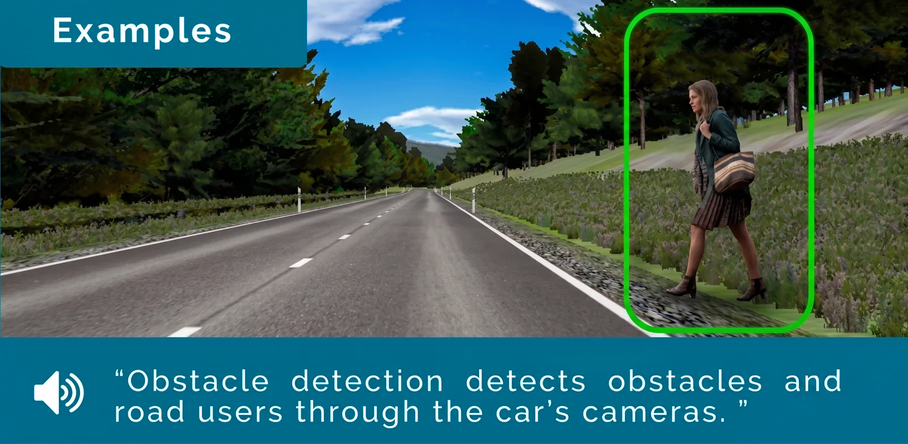
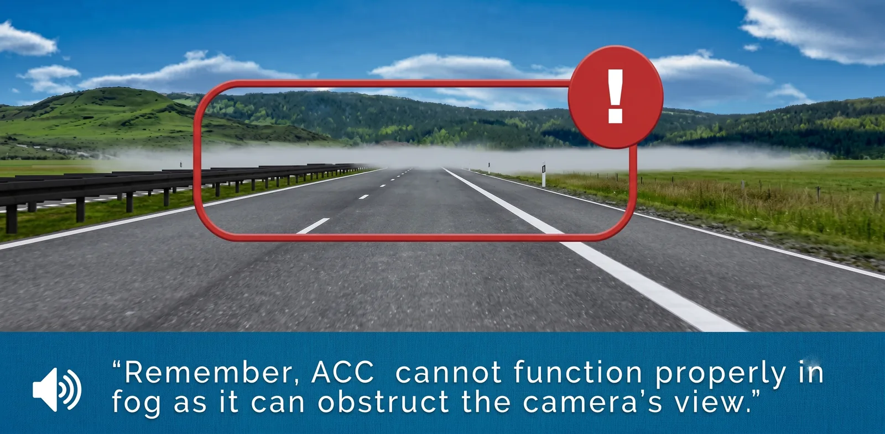
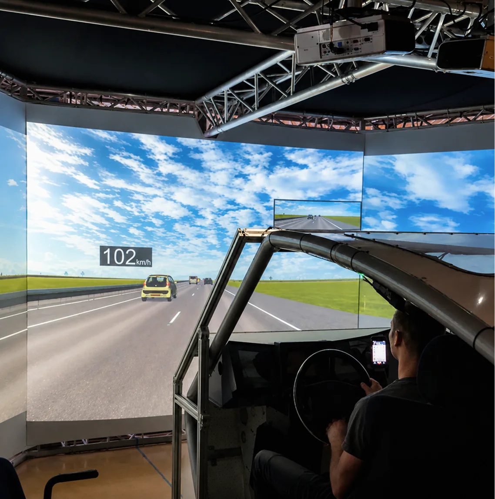

Evaluation of the effects of a digital in-car tutor in automated cars
tl;dr: My most notable research project is my master thesis, for which I investigated the effect of a visual and auditory tutor in highly automated cars on driving safety. For this purpose, I conducted a driving simulator study and analyzed reaction time, lane deviation, and glances away from the traffic situation. It was found that participants who use the tutor performed at least as good as participants who received written instructions for the automated car regarding reaction time and shift of glances away from the traffic situation. However, participants who used the tutor had higher mean lateral deviations.
BACKGROUND
Interaction problems between humans and automated systems are commonplace. Especially in cars with low-level automation, situational awareness and reactivity driver may diminish when there is a need to take back control. It was also found that written information did not suffice in making drivers understand the characteristics and limitations of the automated system.
Thus, at the University of Twente, a research project was started to develop an auditory and visual in-car tutor that communicates with the driver while driving to highlight when the automated system reaches its limitations.



RESEARCH GOAL
To ensure that this tutor itself does not have a negative effect on the driver's attention, reaction time, and ability to safely take back control, I conducted a research project in the context of my master’s thesis. Its goal was to compare the effects on driving safety among participants who received written instruction into the limitation of automated cars and participants who used the digital in-car tutor.
The driving safety was thereby defined by three measures: Reaction time to hazardous events, lateral lane deviations, and glances away from the traffic situation. It was hypnotized that participants who used the tutor would have safety measures that were at least as good as those among participants who did not use the tutor but received written explanations of the car automation.
METHOD
A voluntary response sample was gathered, which included 21 female participants, and 19 males. As inclusion criteria, the possession of a driving license and the frequent use of cars were used. The experiment had a between-subjects design and the experimental group used the tutor while the control group received a printed booklet explaining the limitations and characteristics of the automated car.
The experiment was conducted in a near life-size driving simulator with a steering wheel and pedals that provided force feedback. Participants had to complete ten different scenarios, each lasting for three to four minutes. One of these scenarios was an emergency situation in which it was necessary to retake control over the vehicle as the automated system was not able to cope with the situation.
RESULTS
No significant difference was found between the experimental group and the control group for glances away from the traffic situation and reaction time to hazardous events. But for lateral lane deviation, the mean reaction time in the experimental condition was significantly higher than in the control group. Therefore, the hypothesis was found to be only partially supported.